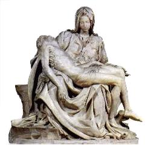
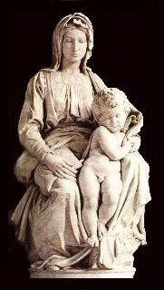
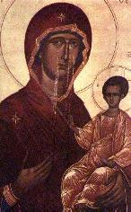
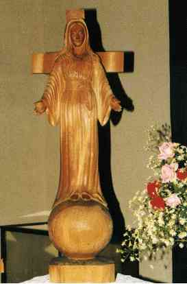
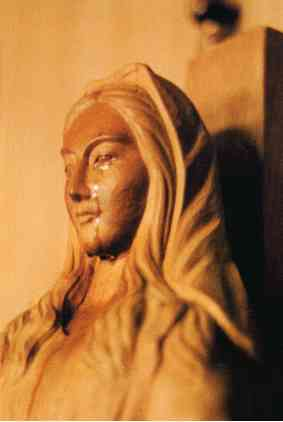

|  |
|
While it portrays what would clearly be a poignant moment, the Bible never mentions such a moment as having ever taken place. In the Gospel accounts, it is Joseph of Arimathaea who claimed the body of Jesus, prepared it for burial, and then laid it in the tomb-
- Matthew 27:57-61
- Mark 15:42-47
- Luke 23:50-56
- John 19:38-42
Had this scene actually happened as portrayed in the Pietà, Mary would have been considered unclean for seven days as a result of touching a dead body, as the book of Numbers explains-
Num 19:11 He that toucheth the dead body of any man shall be unclean seven days.
Num 19:12 He shall purify himself with it on the third day, and on the seventh day he shall be clean: but if he purify not himself the third day, then the seventh day he shall not be clean.
Num 19:13 Whosoever toucheth the dead body of any man that is dead, and purifieth not himself, defileth the tabernacle of the LORD; and that soul shall be cut off from Israel: because the water of separation was not sprinkled upon him, he shall be unclean; his uncleanness is yet upon him.
Surely the thought of the "immaculate" Mary being declared unclean for a week is anathema to the Catholic mind. So, why illustrate a scene that apparently never happened?
|  |
|
|
 |
 |
|
| From the book "Miraculous Images of Our Lady", by Joan Carroll Cruz -Copyright © 1993, TAN Books and Publishers, INC., Rockford, Illinois 61105. |
Here is the shrine's web page 
Shrines like that of the Weeping Madonna of Syracuse Sicily are the inevitable result of these weeping or bleeding images, with literally thousands of Catholics on pilgrimage kneeling before the statues or icons as they pray to Mary for healing or for her intercession, and endlessly reciting the decades of the Rosary. Catholics claiming miracles directly attributed to these images of Mary or Jesus are legion, and have practically become a staple of the Catholic faith.
|
 |
 |
| Here you see what has to be one of the more remarkable
weeping, bleeding, sweating and talking statues of Mary, in |
But most astonishing of all, Mary is shown as if she is on the cross! The symbolism of this statue is quite unmistakable in it's meaning. It is blasphemy of the highest order and clearly AntiChrist, openly substituting Mary as the one to look for forgiveness and redemption, instead of Jesus Christ. Note this message attributed to the apparition of Mary associated with this statue:
"Pray very much the prayers of the Rosary. I alone am able still to save you from the calamites which approach. Those who place their confidence in me will be saved."
Here is a web page revealing the source of the above statue's symbology,
which is linked to declaring Mary the Co-Redemptrix of the human race:
 The Lady of All Nations.
The Lady of All Nations.
And note this web page at Queenship Publishing promoting a book on this
"miracle" that declares-  Akita: Mother of
God as Co-Redemptrix!
Akita: Mother of
God as Co-Redemptrix!
Here is the home page of  Queenship Publishing,
Queenship Publishing,
Roman Catholics would maintain that statues and icons of this sort actually aid the process of worshipping God. The truth though, is that the Bible is quite specific in it's complete prohibition of bowing down before these kind of graven images because it is nothing short of idolatry, which is very strongly condemned by God:
Exo 20:4 Thou shalt not make unto thee any graven (carved) image, or any likeness of any thing that is in heaven above, or that is in the earth beneath, or that is in the water under the earth:
Exo 20:5 Thou shalt not bow down thyself to them, nor serve them: for I the LORD thy God am a jealous God, ...Deu 12:2 Ye shall utterly destroy all the places, wherein the nations which ye shall possess served their gods, upon the high mountains, and upon the hills, and under every green tree:
Deu 12:3 And ye shall overthrow their altars, and break their pillars, and burn their groves with fire; and ye shall hew down the graven images of their gods, and destroy the names of them out of that place.
Deu 12:4 Ye shall not do so unto the LORD your God.
What could more clear than that? If God himself condemns these idols in no uncertain terms, then none of the messages or miraculous events attributed to these idols or apparitions can possibly be from God. Just what does that leave you with? They are either outright fraud, or they are Satanic - there is no other choice. Catholics might as well be making and venerating golden calves! It will do them just as much good in the eyes of God.
See also  Golden Cherubim, A Brass Serpent and Pictures of Your Mother.
Golden Cherubim, A Brass Serpent and Pictures of Your Mother.